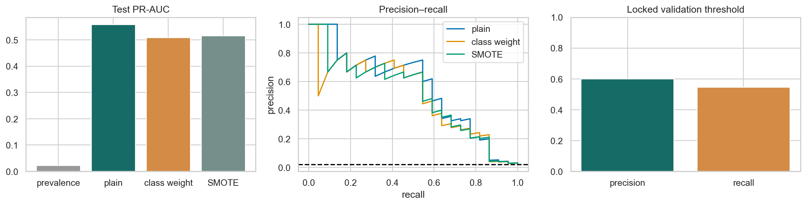

ML Hands-on Lab · 10 — Practice and diagnosis
Imbalanced classification
1. The decision and the mechanism
For a rare event, choose the decision requirement before the classifier: how many real events must be found, and how many false alarms can the team handle? Class weights, resampling, ranking metrics, and thresholds address different parts of that question.
This lesson includes the mechanism, a hand-worked example, and the experiment design. The paired notebook contains the complete runnable setup and produces the diagnostic figure below.
2. Work a small example
The experiment creates 5,000 rows with roughly a 2% positive rate. A model that always says negative can look excellent by accuracy while doing nothing useful. The notebook compares ordinary logistic regression, a class-weighted version, and a pipeline that creates synthetic minority examples only from the training split.
A useful detector can have lower accuracy
Among 1,000 cases, suppose 20 are positive. An all-negative rule gets 980 correct: 98% accuracy and zero recall. A detector catches 15 positives but raises 30 false alarms. Precision is 15 / (15 + 30) = 33.3%; recall is 15 / 20 = 75%; accuracy is (15 + 950) / 1,000 = 96.5%. Whether that is useful depends on the cost of the five misses and 30 unnecessary reviews.
3. The mathematics, with meanings
\[\mathrm{precision}=TP/(TP+FP),\qquad \mathrm{recall}=TP/(TP+FN)\]
Precision asks how often an alert is right; recall asks what fraction of real events were caught. Lowering a score threshold usually catches more positives and creates more false alarms. Average precision summarizes precision across recall changes as the threshold moves. Its no-skill reference depends on prevalence, unlike the 0.5 random-ranking reference for ROC AUC.
\[L=-\sum_i\left[w_1y_i\log p_i+w_0(1-y_i)\log(1-p_i)\right]\]
Class weighting changes which training errors cost more. It can improve sensitivity, but weighted scores are not automatically calibrated probabilities for the original population. SMOTE instead interpolates between nearby minority training points; it changes the training sample and assumes those interpolations are meaningful. Threshold choice then turns a score into an operational action.
4. Follow the actual experiment
- Split the original rows into development and a sealed 20% test set, stratifying by label. Split development again into train and validation. Keep natural class prevalence in validation and test.
- Fit three pipelines. Each learns its scaler on training rows. The SMOTE pipeline scales first, creates synthetic training points, and then fits logistic regression.
- For the weighted model, compute the precision–recall curve on validation. Among thresholds with precision at least 0.5, choose the one with the highest recall.
- Freeze the threshold and apply it to test. Report both precision and recall: a validation target is not a guarantee on a new sample.
- Compare test average precision for all models against test prevalence. Also inspect the workload and confusion counts at the frozen threshold.
5. Controls worth changing
| Control | What changing it does | What to inspect |
|---|---|---|
| class_weight="balanced" | Raises the relative cost of rare-class mistakes. | Recall may rise while precision and probability calibration change. |
| SMOTE neighbours | Controls which minority cases can be interpolated. | Sparse or mixed-type neighbourhoods can create unrealistic points. |
| Required precision: 0.5 | A higher requirement usually means fewer alerts and lower recall. | How many validation positives support the estimate; confidence can be poor with tiny counts. |
| Decision threshold | Changes actions without retraining the model. | Measure alert volume, precision, recall, and the cost of errors. |
6. Read the result and its limits
The first panel compares test average precision with the test-prevalence reference. The second shows the full precision–recall tradeoff; crossing curves mean that no model dominates at every operating point. The confusion display shows the selected decision policy. A higher average precision does not guarantee a better result at the particular recall or staffing constraint you need.

The notebook falls back to threshold 0.5 if no validation threshold meets the requested precision. That fallback does not satisfy the requirement by definition; report infeasibility rather than describing it as a successful precision-constrained policy. Label noise and delayed outcomes can dominate this small rare-event sample.
7. Code that exposes the mechanism
This selection excerpt uses the validation scores from the fitted weighted model. The complete notebook creates the split and fits the estimator first. Precision and recall have one more element than the threshold array, so the last values must be excluded when indexing thresholds.
validation_score = weighted.predict_proba(X_val)[:, 1]
precision, recall, thresholds = precision_recall_curve(
y_val, validation_score
)
feasible = np.flatnonzero(precision[:-1] >= 0.5)
if len(feasible):
chosen = feasible[np.argmax(recall[feasible])]
threshold = thresholds[chosen]
print("Validation target met at:", threshold)
else:
threshold = 0.5 # notebook fallback; requirement remains unmet
print("No validation threshold meets the precision target")
test_score = weighted.predict_proba(X_test)[:, 1]
test_prediction = test_score >= threshold
print(precision_score(y_test, test_prediction, zero_division=0))
print(recall_score(y_test, test_prediction, zero_division=0))For cross-validation, put SMOTE inside an imbalanced-learn pipeline so it runs independently within each training fold. Resampling the entire development matrix before CV would leak synthetic-neighbour relationships across fold boundaries.
8. Break an assumption
The deliberate wrong experiment calls SMOTE before splitting. Synthetic neighbours derived from the same original observations can straddle train and test, and the test prevalence changes from rare events to an artificially balanced population. Both changes invalidate the comparison.
- Compare the positive share before and after the wrong split. An average-precision increase is not solely evidence of duplicate leakage: prevalence itself affects the metric.
- Raise the required validation precision from 0.5 to 0.8. Report when the target is infeasible and inspect how many true positives remain.
- Evaluate the frozen threshold on a population with a lower positive rate. Even unchanged sensitivity and specificity can yield lower precision.
9. When to use it and what comes next
Use this lesson for fraud review, defect inspection, or any rare-event queue where alert cost matters. Preserve the deployment prevalence in evaluation, keep resampling inside training, and separate probability calibration from decision thresholding. The broader metrics-and-calibration lesson explains why ranking and calibrated probabilities are different properties.